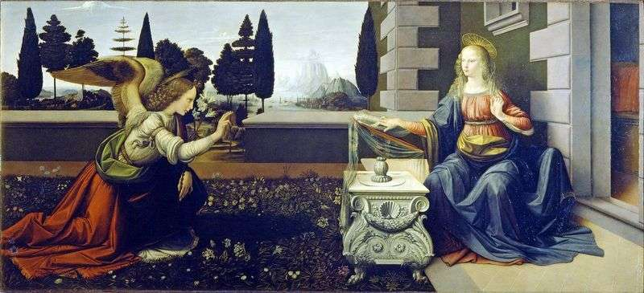
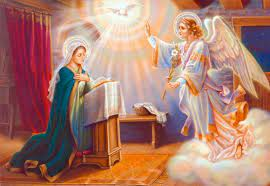

— картина на дереві, яка приписується італійському художнику епохи Відродження Леонардо да Вінчі і датується приблизно 1472–1475 роками. [1] Він розміщений угалереї Уффіці у Флоренції , Італія. Леонардо, можливо, закінчив Благовіщення на початку двадцяти років, [2] залишаючись у майстерні Андреа дель Верроккьо , у якого він був учнем у підлітковому віці.
Одне з перших полотен на релігійну тему, продуманий та написаний самим Леонардо, – “Благовіщення” . Історики мистецтва прийшли до висновку, що ця робота, яку приписували пензля видатного флорентійського художника Доменіко Гірландайо, насправді належить пензлю Леонардо.

На жаль, не відомо, хто міг зробити замовлення на “Благовіщення”, створене Леонардо близько 1472-1475 років. Леонардо не згадує цю картину ні в одній зі своїх записів або листів, які дійшли до нас, але ми пам’ятаємо, що багато його записи були загублені. У письмовому договорі варто дата укладення угоди дата передбачуваного завершення роботи. У ньому є і опис зображення, позначено кількість фігур, які повинні бути зображені на картині, згадка необхідних фарб. Можливо, що “Благовіщення” було написано Леонардо в майстерні Верроккьо, коли він закінчив своє учнівство і став професійним художником.